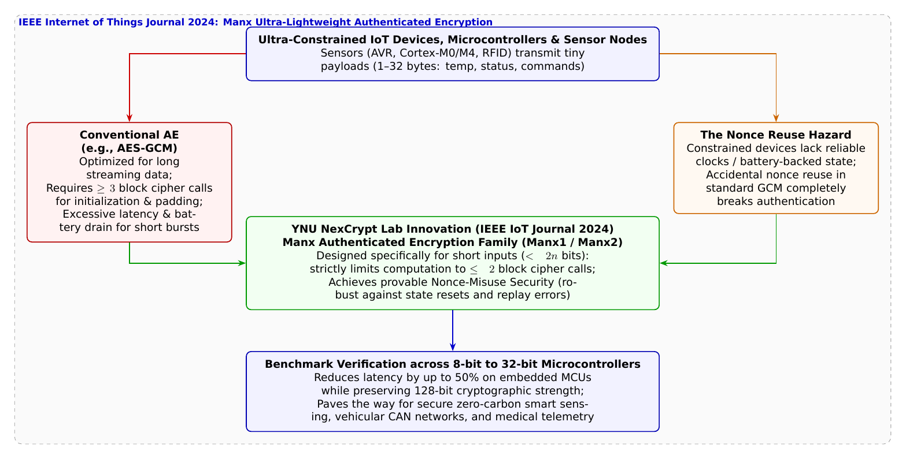

🎨 4コマ漫画挿絵（文字なし）
AI高解像度生成▲ 【挿絵】青葉台高校 情報科学部＆帝都科学大学サイバーディフェンス・ラボでの実践シーン
💬 4コマ漫画キャラクターセリフ (Story Dialogue Script)
日・英バイリンガル (JA / EN)[葵]「えっ、暗号って動かすだけでそんなにバッテリーを食っちゃうの！？」
[Aoi] "Wait, does running encryption really eat up that much battery!?"
[蓮]「しかも時計（RTC）を持たない安価なチップだと、ノンス（使い捨て番号）の再利用ミスで暗号が破られる危険もある……！」
[Ren] "And on cheap chips without real-time clocks, accidental nonce reuse completely shatters security...!"
[蓮]「最大たった2回のブロック暗号呼び出しで暗号化と改ざん検知（MAC）を完了し、しかもノンス再利用に対しても安全（Nonce-Misuse Secure）！？」
[Ren] "Encrypts and authenticates in at most 2 block cipher calls, AND provides proven Nonce-Misuse Security!?"
[結衣]「数理の洗練が、世界中に散らばる何百億もの極小IoT機器に安全な命を吹き込むのです！」
[Yui] "Refined mathematical elegance breathes secure life into billions of micro-IoT devices worldwide!"
📖 小説本文
冬の夕風が窓を揺らす青葉台高校の情報科学部室。ハンダごての微かな熱気が漂う作業机で、神崎蓮が顕微鏡を覗き込みながらピンセットで小さな電子部品をつまんでいた。
「だめだ……またウォッチドッグタイマーでリセットがかかった。8ビットマイコンの処理能力じゃ、標準のAES-GCMを回すだけでクロックサイクルが限界突破しちゃうよ」
「蓮くん、何を作ってるの？」
橘葵がホットココアのマグカップを片手に覗き込む。ブレッドボードの上には、米粒ほどしかない超小型の温度・湿度センサーモジュールと、ボタン電池が載っていた。
「校舎裏のビニールハウスで実証実験中の、スマート農業用土壌センサーだよ。山の中や畑に置くから、ボタン電池1個で最低でも3年間はノーメンテナンスで動かしたいんだ。土壌の温度や酸性度データを1時間に1回、暗号化してワイヤレス送信する設計なんだけど……」
「暗号化するだけで、そんなに電池を消耗しちゃうの？」葵が不思議そうに首をかしげる。
「ええ、葵先輩。そこには現代の暗号工学が直面する『極短データ（Short Inputs）のジレンマ』があるのです」
白石結衣がホワイトボードの前に立ち、数式とブロック図を素早く描き出した。
「現在、インターネット通信（TLS 1.3）などで世界標準として使われているのは『AES-GCM』などの**認証付き暗号（AEAD: Authenticated Encryption with Associated Data）**です。これはデータの盗聴を防ぐ『暗号化』と、途中で通信が改ざんされていないかを証明する『メッセージ認証子（MAC）』を同時に実現する素晴らしい技術です」
「うん、葵先輩も第7話でデジタル署名やハッシュを習ったよね」蓮が頷く。
「ですが」と結衣はペンの先で強調した。「一般的なAE方式は、ギガバイト単位の大容量ファイルをストリーミング送信するような『長大なデータ』の処理速度（漸近的レート）を重視して作られています。そのため、たとえ送りたいデータが『気温24.5度』というわずか数バイトであっても、内部のブロック暗号処理（128ビット単位）を初期化やパディング、認証子の生成のために最低でも3回〜4回以上呼び出さなければならないのです」
「えっ！ たった1言伝えるために、挨拶と自己紹介と退室手続きで何往復も書類を書かされるお役所手続きみたいなもの！？」
「あはは、葵ちゃんの例えは相変わらず的を射てるな」
部室のドアを開けて入ってきた城崎悠真が、温かい笑顔で笑った。手には、大学の暗号数理研究室から持参した論文の別刷りが握られている。
「さらに深刻なのが**『ノンス（Nonce: 使い捨ての初期化値）』の再利用問題**だ」と悠真は続ける。
「標準的なAES-GCMでは、1回限りの使い捨て番号であるノンスを二度と重複させてはいけないという絶対の掟がある。もしバッテリー交換やリセット、あるいは時計（RTC）を持たない安価なセンサーの誤動作で同じノンスを使って二度暗号化してしまうと、暗号鍵や認証鍵が数学的に完全に暴露されてしまう致命的な脆弱性（Nonce-Misuse脆弱性）を抱えているんだ」
「そんな……！ 極小センサーって、時計のバックアップ電池すら削ってコストダウンしてるのに、絶対に番号を重複させるなって言われても無理だよ……」
蓮が頭を抱えた。その時、悠真がホワイトボードに一枚の愛らしい猫のイラストをマグネットで留めた。
「そこで、このジレンマを鮮やかに解決したのが、僕が所属する横浜国立大学SPIRALの**四方順司教授（NexCrypt Lab長）**と、Alexandre Adomnicăi博士、峯松一彦博士らの国際共同研究グループが発表し、国際学術誌『IEEE Internet of Things Journal (2024年11月)』に掲載された超軽量認証付き暗号**『Manx（マンクス）』**なんだ」
「マンクス……？ イギリスのマン島原産の、しっぽがない俊敏な猫ちゃんのこと！？」葵が目を輝かせる。
「その通り！ 余分なしっぽ（無駄なオーバーヘッド）を徹底的に削ぎ落とした、俊敏で強靭な暗号方式だからこの名が付けられたんだ」
悠真は誇らしげに論文の構造図をプロジェクターに映し出した。
「Manx（マンクス）は、入力データ（ノンス・平文・付加情報）の合計が2ブロック（256ビット）未満という、まさにIoTセンサーの短い通信に特化して極限まで最適化されている。ブロック暗号の呼び出し回数を**『最大でもたった2回』**に抑え込んでいるんだ」
「たったの2回！？」蓮が目を見張った。
「従来の標準方式に比べて暗号処理の計算回数が半分になる。さらに驚異的なのは、数学的に**『ノンス再利用耐性（Nonce-Misuse Security）』**が厳密に証明されている点だ。万が一センサーがクラッシュして同じノンスを誤って使い回してしまったとしても、暗号の機密性と改ざん検知能力が破綻しない強固な数学的バリアが組み込まれているんだよ」
「……なんて美しい設計でしょう」結衣が感嘆の息を漏らした。「8ビットマイコン（AVR）や32ビットARM Cortex-M0/M4でのベンチマーク測定でも、暗号化にかかる遅延時間（レイテンシ）と消費電力が劇的に半減したことが実証されています」
蓮はすぐさまノートPCに向かい、ManxのC言語実装ライブラリを土壌センサーのマイコンボードへとフラッシュ書き込みした。
オシロスコープに表示された消費電力のピーク波形が、目に見えてスリムに激減する。基板上の小さなLEDが、緑色の光をリズミカルに瞬かせた。
「すごい……！ 計算が以前の2倍速で終わって、あっという間に超省電力スリープモードに入った！ これならボタン電池1個で5年以上持っちゃうよ！」
蓮が満面の笑みでガッツポーズを作った。
「目に見えないほど小さくても、地球環境や人々の命を見守るスマートセンサーの鼓動。それを数学の力で守るのが、暗号学者の情熱なんだね」
葵が優しく微笑み、冬の夕暮れの部室に、新しい知の温もりが満ちていった。
---
📊 セキュリティ構造図解 (TikZ LuaLaTeX生成)
国家安全基準・工学図解
▲ 【技術構造図】IPAデジタルスキル標準・国際規格に準拠した仕組みのモデル化